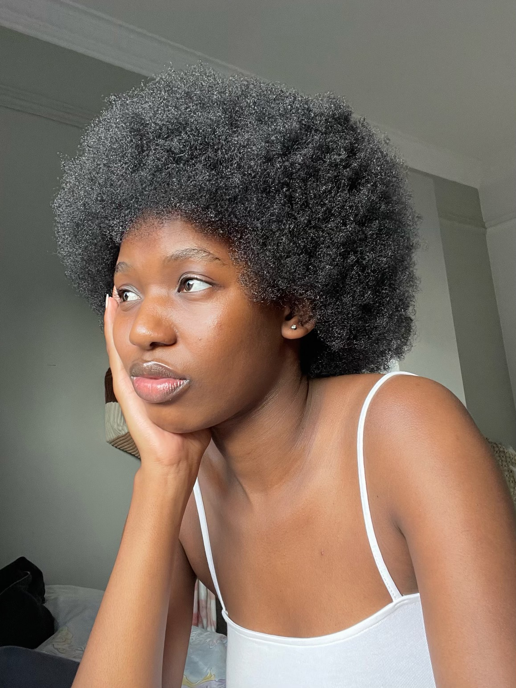
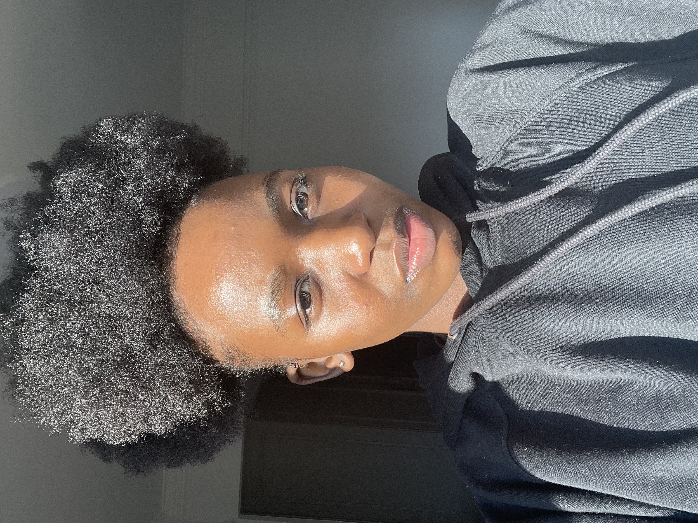
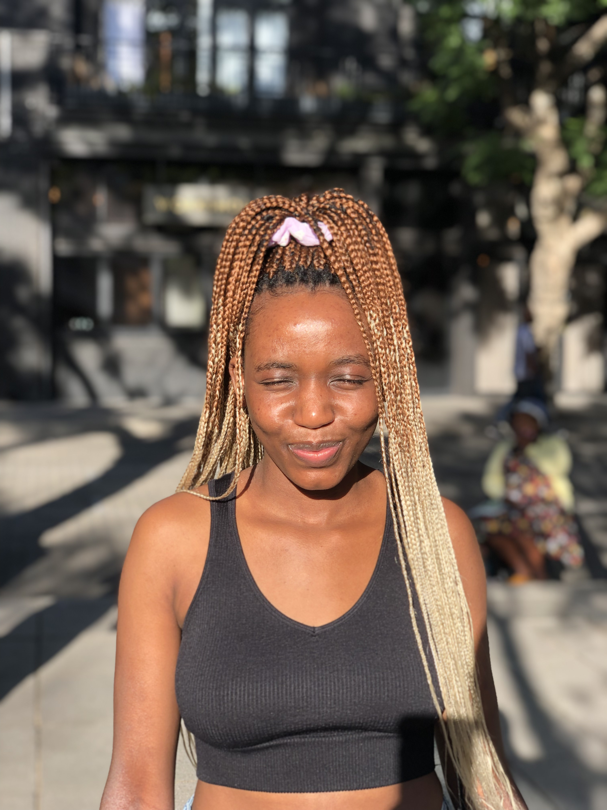

11 April 2023
For my Web art, I have settled on focusing on black women’s hair as an art form because it can take on many different forms, shapes, lengths, and colours like artwork. And overall, it is beautiful which is my focus for my artwork, aesthetics. See examples of below of the fluidity and ever changing hair of black women (the women being me)
  
I have decided to create a portrait collage consisting of different hairstyles black women can do. I want the different images of the collage to be clickable which is where the interactivity will come into play with my artwork. See the example below.
The user will be able to click on the image and find out information about that specific hairstyle how to do it, how to take care of it, how long it usually takes to get done, how long it lasts, and how to take care of it. The information provided will be from my own knowledge as well as research.
Refrences
Gomez, B. C. (2020, February 5). Crafting a Cutout Collage Layout with CSS Grid and Clip-path | Codrops. Retrieved from https://tympanus.net/codrops/2020/02/05/crafting-a-cutout-collage-layout-with-css-grid-and-clip-path/